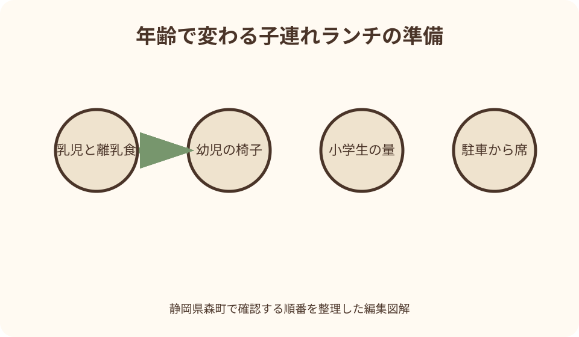
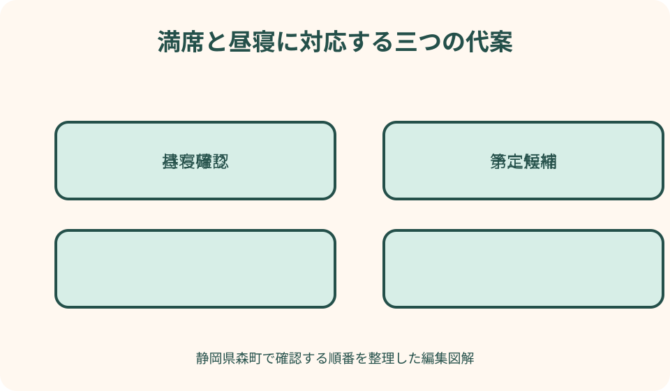

ランチ・子連れ｜最終確認 2026-08-10
静岡県森町の子連れランチ｜年齢・席・移動から選ぶ家族の確認表
子連れの店選びは、子ども向け料理の有無だけでは決まりません。年齢、座り方、食べられる物、駐車から席までの移動、食後の予定を先に整理し、設備と持込みは店へ具体的に確認します。

編集イラスト店名より先に、子どもの条件を書き出す
子どもと食事をする日の困りごとは、料理が届いてからではなく、駐車場、入口、待ち時間で始まります。検索写真に子どもが写っていても、自分の家族と同じ年齢や人数を受け入れられる根拠にはなりません。この記事は店を順位付けせず、森町公式と観光協会の案内から候補を知り、店へ確認する順番を作ります。
最初に子どもの年齢を一人ずつ書きます。ゼロ歳と二歳を『子ども二人』とだけ伝えると、ベビーカー、離乳食、子ども椅子の必要性が伝わりません。月齢、歩けるか、一人で椅子に座れるか、食べられる量、昼寝のおおよその時刻まで共有すると、店側も答えられる範囲を判断しやすくなります。
次に譲れない条件を三つまで選びます。アレルギー確認、背もたれのある席、トイレ、短い待ち時間などです。子ども向けメニュー、座敷、景色、甘味といった希望は別欄へ置きます。全部を満たす一軒を探し続けず、安全に関わる条件と、あれば助かる条件を分けることが現実的です。
筆者が掲載店を子どもと利用した体験談ではありません。味、接客、設備、混雑を経験したようには書かず、2026年8月10日に確認した公開情報を入口にします。営業時間、料金、席、持込み、設備は変わるため、記事の記載ではなく訪問日の店舗案内を最終確認にします。
公式情報から候補と位置関係を知る
森町公式の観光案内は、観光協会、観光資料、町内の見どころへ進む入口です。午前に小國神社、午後にアクティ森というように目的地を二つ置き、その間で昼食を探します。町名だけで広く検索すると、食事のために同じ道を戻る予定ができやすいため、店の人気より移動の向きを先に見ます。
森町公式のアクティ森案内は、町の体験施設としての位置付けと施設情報を知る出発点です。体験と食事を同じ場所にまとめられる可能性は、子どもの乗降回数を減らす点で検討に値します。ただし飲食施設の営業、メニュー、予約、トイレや授乳設備の現在状況は、施設の最新案内へ進んで確認します。
森町観光協会のアクティ森ページも、所在地や施設の概要を確認する補助になります。町公式と観光協会の掲載内容が同じに見えても、更新時点や役割は異なります。体験受付と飲食受付を混同せず、昼食だけ利用できるか、体験予約の前後に食べられるかを施設へ具体的に尋ねます。
観光協会の観光スポット一覧には飲食店の個別ページがあります。店名、住所、連絡先、紹介される料理を候補抽出に使いますが、子ども歓迎、ベビーカー可、離乳食可を店名や写真から推測しません。候補を二店選び、それぞれへ同じ質問をして、家族の条件に合う方を判断します。
乳児・幼児・小学生で確認を変える
乳児では、ベビーカーのまま入れるか、たたんで置く場所があるか、抱いたまま待てるかを確認します。入店できることと、席の横へベビーカーを置けることは別です。授乳やおむつ替えも、店内設備があると仮定せず、近くの利用可能な場所を含めて尋ねます。使用済みおむつの処理は施設の案内に従います。
離乳食は、持込みの可否、温めの可否、容器やごみの扱いを一つずつ聞きます。市販品なら必ず持ち込める、店の電子レンジを借りられるとは考えません。許可された場合も、店内の器や調理器具を当然に借りず、自分で必要なスプーン、食事用エプロン、密閉袋を用意します。
幼児では、子ども椅子の有無だけでなく、ベルト、背もたれ、机との高さを確認します。座敷が安全とは限らず、段差、熱い器、走り出しやすさがあります。椅子が合わない場合に膝上で食べるのか、持参の補助具を使えるのかを家族で決め、店へ器具の使用可否を尋ねます。
小学生では、大人一人前か子ども量か、食べ終わるまでの時間が焦点になります。子ども向け料理がなくても取り分け可能な場合はありますが、注文条件や食器を推測しません。食べられる量と苦手な物を親が把握し、残す前提の過剰注文を避けます。午後に体験予約がある日は、注文前に退出希望時刻を相談します。

アレルギーと食事制限は、質問を具体化する
アレルギー確認では『対応できますか』だけで終えません。避ける原材料、微量混入を避ける必要、同じ厨房や器具を使う料理を食べられるかを伝えます。店が回答できる範囲には限界があります。重い症状の可能性がある場合は医療者から示された基準を優先し、確認が足りなければ持参食や別の場所を選びます。
メニュー名や写真から原材料を判断しません。だし、たれ、衣、菓子など、見た目では分からない材料があります。以前食べられた料理も、材料や製造元が同じとは限りません。訪問日の注文時にも再確認し、店員の説明を家族の一人だけが聞くのではなく、注文する大人同士で共有します。
宗教、療養、食感、嚥下などの制限も、店が判断できる具体的な言葉へ変えます。『やわらかい物』では家族と店の想像が違うため、避ける硬さや形を伝えます。対応が難しいと言われた店を悪く評価せず、家族が安全に食べられる物を持参できる場所や、食事後に合流する方法へ切り替えます。
緊急時に備え、処方された薬、連絡先、最寄りの医療情報を保護者が管理します。店舗へ医療判断を求めません。症状が出た場合は食事を続けず、医療者の指示に従います。この記事は個別店舗や料理の安全を保証するものではなく、確認しても残る不確実性を家族が判断するための手順です。
駐車場から席、トイレまでを一本で見る
駐車場は『あり』だけでは判断できません。入口までの距離、路面、段差、雨の日の乗降、車のそばでベビーカーを広げられるかを確認します。満車時に路上や近隣の私有地へ停める代案は持ちません。第二候補の住所と電話を保存し、移動前に同乗する大人が確認します。
入口から席までは、扉の幅、階段、靴の脱ぎ履き、通路、ベビーカー置場が関わります。古い建物や座敷を危険と決めつけることも、写真だけで利用可能と決めることも避けます。子どもの人数、ベビーカーの大きさ、介助の必要を伝え、難しければ持ち帰りや別候補へ変えます。
トイレは店内にあるかだけでなく、子どもと一緒に入れる広さ、おむつ替え、補助便座が必要かを考えます。設備がない場合、近隣施設を無断で使うのではなく、利用可能な公共施設を公式情報で確認します。食事の直前に探し始めず、目的地到着時に一度済ませる計画も有効です。
祖父母を含む日は、子どもの設備に加えて、椅子の背、段差、薬の時間、トイレまでの距離を確認します。家族全員が同じ動線を取る必要はありません。一人が子どもを見て、別の大人が受付を確認する役割分担を決めれば、駐車場や入口で全員が待ち続ける時間を減らせます。
良い点：一か所滞在と複数候補を選べる
アクティ森のように体験と飲食を同じ行程へ置ける施設は、条件が合えば乗降と移動を減らせます。食事の前後に子どもの居場所を作りやすい点も検討材料です。ただし一か所ですべて解決すると決めず、当日の営業、予約、対象年齢、必要な服装を施設へ確認してから予定へ入れます。
町内の個別飲食店を選ぶ良さは、料理や地域の店に触れながら、次の目的地へ合わせて行程を組み替えられることです。第一候補を目的地近く、第二候補を帰路に置けば、満席でも町を往復せずに済みます。どちらが上かではなく、当日の家族条件にどちらが合うかで選びます。
年齢別の質問を用意すると、店へ漠然と『子連れ大丈夫ですか』と尋ねずに済みます。店側は席や設備の現状を具体的に答えやすく、家族も期待を広げすぎません。対応できない項目が一つあっても、持参品や役割分担で補えるのか、安全条件なので別候補にするのかを落ち着いて決められます。
子どもの昼寝と食事を予定の中心に置くことは、観光を諦めることではありません。目的地を一つ減らし、食事と休息に余白を置けば、子どもだけでなく運転者や祖父母も休めます。森町を一日で回り切るより、家族がまた来られる状態で帰ることを良い一日の基準にします。

注文したい点：設備情報を一語で済ませない
観光案内には、子ども椅子、ベビーカー、おむつ替え、授乳、持込み、アレルギー確認先が統一形式で載っているとは限りません。掲載がないことを設備がない意味にはできませんが、家族は一店ずつ尋ねる必要があります。更新日と確認項目が共通表示されると、店と利用者双方の負担を減らせます。
『子連れ歓迎』『家族向け』という一語だけでは、乳児、幼児、小学生のどこまで想定するか分かりません。席数が限られる日、ベビーカーを置けない席、離乳食を持ち込めない場合もあります。記事側も便利な一語で認定せず、何歳、何人、何が必要かを質問へ分解します。
営業時間や価格、メニューを長期間固定する記事は、臨時休業や仕入れ変更に追い付きません。公開情報に数字があっても訪問日の保証には使わず、確認日と公式確認の経路を示します。店へ問い合わせるときも、忙しい時間を避け、公式ページで分かることを読んでから必要な項目だけを短く尋ねます。
利用者側にも注文があります。許可されていない食べ物を広げない、子どもを店内で走らせない、設備が希望と違っても店員へ責任を押し付けないことです。家族の条件に合わない店は悪い店ではありません。第二候補へ移る準備を、大人側の責任として持ちます。
対案・結論：昼寝と満席を予定へ入れる
前日に店へ伝える質問は、訪問日時、大人と子どもの人数・年齢、希望する席、ベビーカー、離乳食持込み、アレルギー、トイレ、駐車の八項目です。全部が必要でなければ減らします。回答を確認日時と一緒に家族メモへ残し、当日は入店時に人数と必要事項をもう一度伝えます。
昼寝前に食べる子、食後に眠る子、車でしか眠れない子がいます。普段の時刻から大きくずらさず、移動を昼寝に重ねるか、食後に静かな時間を取るかを決めます。眠った子を起こして予定どおり入店する一案だけにせず、一人が車で待つ、持ち帰る、時間を変える選択を準備します。
満席時は、店の前で子どもを待たせながら検索を始めません。第二候補へ連絡する、持ち帰りへ変える、食べられる持参品を使う、観光を一つ中止して時間をずらす順番を先に決めます。持ち帰りは保存時間と飲食場所のルールを守り、車内に長く置きません。
結論は、子ども向け設備が多い店を探すことではなく、自分の子どもの年齢と安全条件を店へ伝え、難しい日の逃げ道を持つことです。料理を完食し、すべての観光地へ行く必要はありません。家族と店が無理をせず、次の目的地または帰宅へ進めたなら、その昼食は役割を果たしています。
大石の視点とまとめ
私（大石）は、子どもを伴う森町の案内では、目的地を半分にします。駐車から席まで、食事、トイレ、帰路を一つの動線として見て、途中で止まれる場所を先に決めます。大人だけなら進める短い距離も、乳児用品や眠い子どもと一緒なら条件が変わるためです。
実家の家族と食事をする日も、食卓で家や土地の結論を急がせません。子どもがいる場では、住所や次に集まる日など小さな事実を一つ共有できれば十分です。家族の時間を用事で埋めず、食事を終えて安全に帰ることを優先します。
店へは年齢と必要条件を具体的に伝え、設備対応を推測しません。乳児、幼児、小学生で質問を変え、アレルギーは原材料と調理環境を確認します。駐車、入口、席、トイレを一本で見て、昼寝と満席の代案まで用意します。
予約できる店でも、予約が子ども用設備まで確保する意味とは限りません。予約時に席の種類、子ども椅子、ベビーカー置場を一緒に確認し、到着が遅れる場合の扱いも尋ねます。無断で遅れず、子どもの体調で行けなくなったら早めに連絡し、店が示す取消条件に従います。
兄弟姉妹で食べ終わる時刻が違う場合、先に食べ終えた子を誰が見るか決めます。店内を歩かせて時間をつぶさず、一人の大人が外へ出られるか、会計を先にできるかを相談します。外へ出る場合も駐車場で遊ばせず、安全な待機場所を大人が選びます。
持参品は、着替え、食事用エプロン、子ども用のスプーン、ウェットティッシュ、密閉袋、必要な薬を小さな一袋へまとめます。ただし店の食器や机を消毒する目的で薬剤を勝手に使いません。こぼしたときは自分だけで隠さず店員へ伝え、清掃方法の案内に従います。
食後は子どもの顔色、眠気、排せつを確認してから次の体験へ進みます。予約時刻に間に合わせるため走らせたり、気分が悪いまま車へ乗せたりしません。午後の予定を一つ取りやめる判断を、失敗ではなく最初から用意した選択肢として家族全員が共有します。
この記事の事実確認日は2026年8月10日です。アクティ森や飲食店の営業、価格、設備、持込み、予約は変わります。訪問前に下記の町公式、観光協会、施設の最新情報を確認し、不明点は店舗へ直接尋ねてください。
公式情報・確認先
掲載内容は次の一次情報を基礎に整理しました。営業、料金、催し、交通は変わるため、出発前または手続き前にリンク先で最新情報を確認してください。
- 観光案内・地図（静岡県森町、2026-08-10確認）
- 森町体験の里アクティ森（静岡県森町、2026-08-10確認）
- 観光スポット一覧（森町観光協会、2026-08-10確認）
- 森町体験の里アクティ森（森町観光協会、2026-08-10確認）